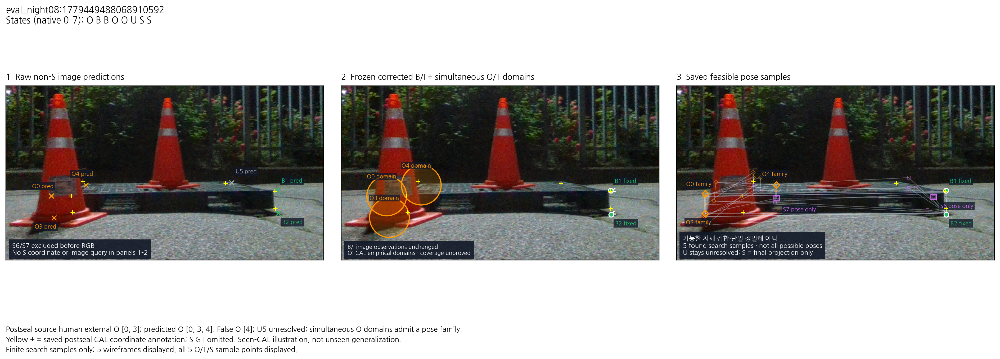
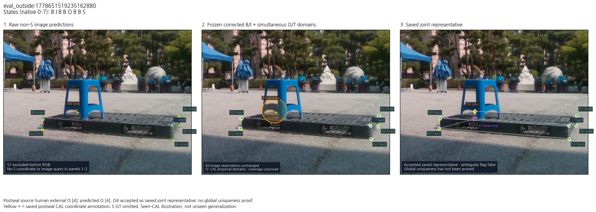
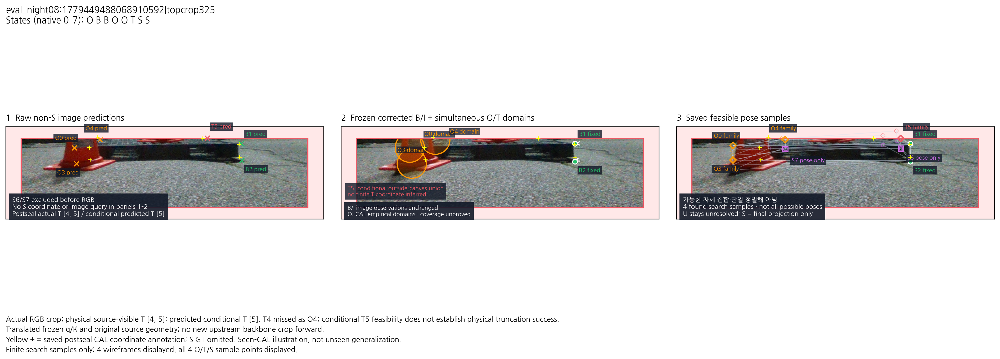
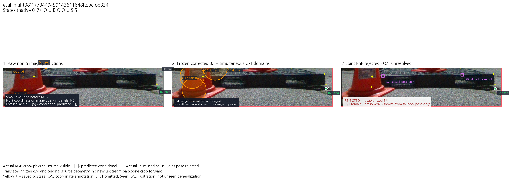
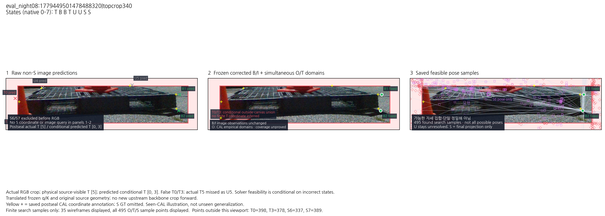
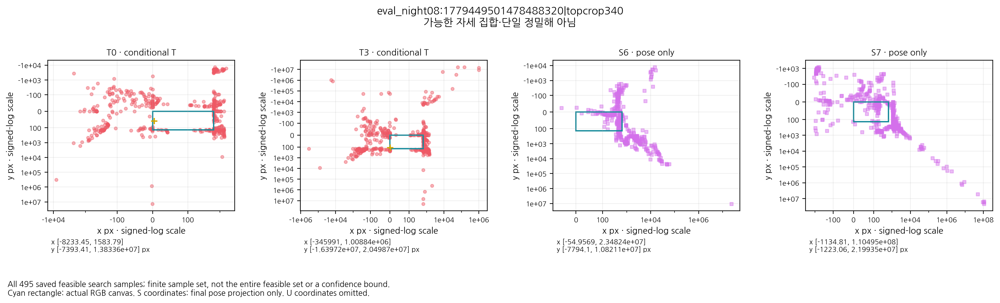

봉인된 최신 evaluation_v3 · 실제 RGB 사례
CAL 사례의 사후 시각화입니다. 예측 캐시와 사후 평가의 hash 결합을 확인했으며 새 영상 추론·학습·PnP 재계산을 하지 않았습니다. S 좌표는 마지막 자세 투영에만 표시합니다. 첫 두 패널에는 S 좌표나 S 영상 query가 없습니다. 초록 B/청록 I는 저장된 보정 관측 그대로입니다.
가능한 자세 집합·단일 정밀해 아님: 여러 투영은 유한 검색에서 발견된 표본입니다. 전체 가능 자세를 열거했다는 뜻이나 신뢰구간이 아닙니다. Crop의 T4/T5 누락과 false T0/T3를 그대로 표시하며 물리적 절단 추론 성공이나 기존 방법보다 성능 향상을 주장하지 않습니다.
eval_night08:1779449488068910592
data/evaluation/pallet_eval_v1/dev_existing/sessions/eval_night08/rgb/1779449488068910592.png
States: O B B O O U S S · accepted=True · pose family=True
Postseal source human external O [0, 3]; predicted O [0, 3, 4]. False O [4]; U5 unresolved; simultaneous O domains admit a pose family.
SVG · PNG
발견된 유한 자세 표본 5개. 표시 wireframe 5개; O/T/S 표본 점은 모두 표시하되 영상창 밖의 점은 잘립니다. 전체 가능 자세나 확률 경계를 뜻하지 않습니다.
eval_outside:1778651519235162880
data/evaluation/pallet_eval_v1/dev_existing/sessions/eval_outside/rgb/1778651519235162880.png
States: B I B B O B B S · accepted=True · pose family=False
Postseal source human external O [4]; predicted O [4]. O4 accepted as saved joint representative; no global uniqueness proof.
SVG · PNG
eval_night08:1779449488068910592|topcrop325
_docs/experiments/pallet_visibility_curriculum_20261013_v1/nonsevere_v1/statewise_joint_ot_20261014_v2/ot_domains/real_crops/eval_night08_1779449488068910592.png
States: O B B O O T S S · accepted=True · pose family=True
Actual RGB crop; physical source-visible T [4, 5]; predicted conditional T [5]. T4 missed as O4; conditional T5 feasibility does not establish physical truncation success.
Translated frozen q/K and original source geometry; no new upstream backbone crop forward.
SVG · PNG
발견된 유한 자세 표본 4개. 표시 wireframe 4개; O/T/S 표본 점은 모두 표시하되 영상창 밖의 점은 잘립니다. 전체 가능 자세나 확률 경계를 뜻하지 않습니다.
eval_night08:1779449499143611648|topcrop334
_docs/experiments/pallet_visibility_curriculum_20261013_v1/nonsevere_v1/statewise_joint_ot_20261014_v2/ot_domains/real_crops/eval_night08_1779449499143611648.png
States: O U B O O U S S · accepted=False · pose family=False
Actual RGB crop; physical source-visible T [5]; predicted conditional T []. Actual T5 missed as U5; joint pose rejected.
Translated frozen q/K and original source geometry; no new upstream backbone crop forward.
SVG · PNG
eval_night08:1779449501478488320|topcrop340
_docs/experiments/pallet_visibility_curriculum_20261013_v1/nonsevere_v1/statewise_joint_ot_20261014_v2/ot_domains/real_crops/eval_night08_1779449501478488320.png
States: T B B T U U S S · accepted=True · pose family=True
Actual RGB crop; physical source-visible T [5]; predicted conditional T [0, 3]. False T0/T3; actual T5 missed as U5. Solver feasibility is conditional on incorrect states.
Translated frozen q/K and original source geometry; no new upstream backbone crop forward.
SVG · PNG
발견된 유한 자세 표본 495개. 표시 wireframe 35개; O/T/S 표본 점은 모두 표시하되 영상창 밖의 점은 잘립니다. 전체 가능 자세나 확률 경계를 뜻하지 않습니다.
모든 저장 표본의 투영 범위 · signed-log 좌표
범위 SVG
표시 창 밖에 있는 표본을 숨기지 않기 위해 부호를 유지하는 로그 축을 사용했습니다. 청록 직사각형은 실제 영상 경계입니다. S는 최종 투영이며 U4/U5의 위치는 추론하거나 표시하지 않습니다.
| native ID | min x,y px | max x,y px |
|---|
| T0 | [-8233.44579685406, -7393.408286128974] | [1583.7890665133432, 13833560.53551753] |
| T3 | [-345991.4576215302, -16397195.414206842] | [1008836.3818197725, 20498742.829577886] |
| S6 | [-54.95691336529969, -7794.1022806470855] | [23482399.86832302, 10821125.31523523] |
| S7 | [-1134.8134395253978, -1223.0644691826435] | [110495294.3797189, 21993474.036618374] |
Figure provenance / exact saved sample ranges · Renderer snapshot